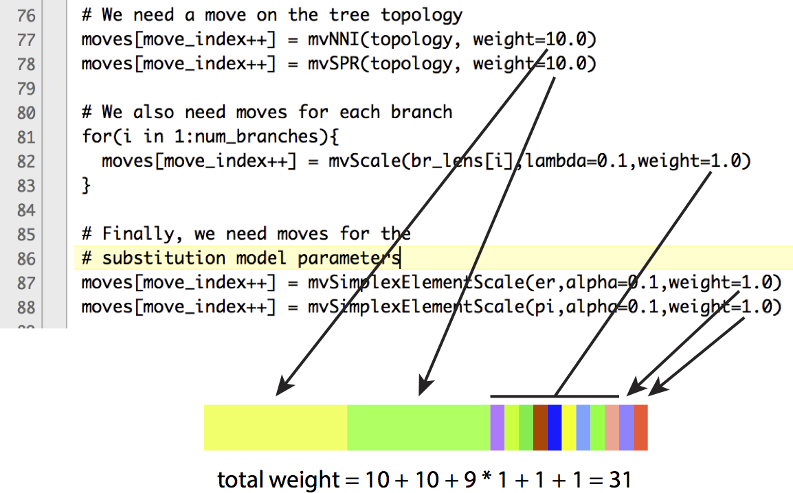

Teaching RevBayes: reflections and materials

Introduction
In the fall of 2022, I got to TA a course called Phylogenetics and the Fossil Record, taught by my PhD advisor, Graham Slater. Although I TA’ed almost every single quarter during my time at the University of Chicago, this particular experience was pretty unique, for a number of reasons. First, it was a mixed undergraduate/graduate course, whereas all the other courses I TA’ed were offered exclusively to undergrads, and often specifically to non-science majors. Second, it was the only course I ever TA’ed that was directly and specifically related to my own research interests. Third, and related to the previous point, my responsibilities went a little further than they usually would. I wasn’t just in charge of grading and leading discussion or problem-set sessions: I was responsible for running a weekly two-hour lab where the students would get some hands-on practice with the material they’d learned about in their lectures, and Graham gave me a lot of freedom when it came to deciding how these labs should be organized and crafting the relevant exercises. This freedom extended to the choice of the software to be used; more on that below. Despite Graham’s and my best efforts, we had to make some adjustments to the originally planned course schedule, so on a few occasions, I even ended up having to introduce foundational concepts in advance of the corresponding lectures, such as the theory behind MCMC.
In contrast to molecular phylogenetics, where there is little interest in individual characters (at the end of the day, a nucleotide is a nucleotide) and dataset assembly is typically automated to a much greater extent, morphological phylogenetics places a lot more emphasis on the process of creating the dataset by scoring features that exhibit informative variation.1 Therefore, the very first lab of the course was devoted precisely to this process, with a fun spin: Graham had students assemble their own character matrices for several different types of pasta, with orzo as the outgroup.2 (The idea of making a phylogeny of foodstuffs seems to be either a pedagogical homoplasy or an instance of horizontal meme transfer – see another example by Josh Drew here.)

This was a really cool way of showing the students how morphological phylogenetic datasets are assembled, and teaching them about the importance of character coding, with great discussions taking place in different breakout groups about whether a given character should be treated as discrete or continuous, ordered or unordered, etc. I felt a little more ambivalent about our decision to stick with the pasta toy example for the rest of the course: every time a new method was introduced, the corresponding homework assignment would have the students apply it to their own pasta dataset. This worked great for parsimony, where you can have a lot of fun with inferring synapomorphies for particular nodes (extreme elongation evolving in the last common ancestor of spaghetti and linguine, etc.), but it got a little too cutesy for its own good when we got to tip-dating, which involves quantities like fossil ages and extinction rates that have no reasonable interpretation unless you are dealing with things that actually die out at different points in time and leave behind remains, like biological species or languages. In this latter case, I found it easier to have the students analyze a real dataset. Graham picked the one from Tedford et al.’s (2009) analysis of North American canids for this purpose, which I also used as an example when demoing the different methods.
Before each lab, I would upload a PDF “handout” to Canvas for the students to read prior to our meeting, though this wasn’t essential, and remained mostly aspirational anyway. The handout would explain key concepts and show how to implement them in the program we were about to work with, and I would use it as a guide for our lab activity. Interspersed throughout the handout, there would be exercises that the students were supposed to complete on their own and turn in the following week – usually, these would ask them to modify the provided code in some way, if only to run it on their own dataset. The idea behind explaining every line of code in detail was to allow the students to refer back to the handout as they were working their way through the exercises.
Choice of software
As with many similar courses, we covered the three main contemporary methods for inferring phylogenies from discrete characters, i.e., parsimony, maximum likelihood, and Bayesian inference. Unlike the other two methods, maximum likelihood is seldom used in fossil phylogenetics, so one could perhaps feel justified in skipping it, but from a pedagogical standpoint, it represents a very convenient bridge between parsimony (given their shared goal of optimizing a particular criterion, accomplished in practice by heuristic searches of tree space) and Bayesian inference (given their shared reliance on the likelihood function). Back in 2020, when the course was TA’ed by my former colleague Anna Wisniewski, PAUP* was used for parsimony, RAxML for maximum likelihood, MrBayes for time-free Bayesian inference, and BEAST 2 for tip-dating. Two years later, some changes to this list were in order. RAxML was always rather inflexible when dealing with morphological data, and by 2022, it had become legacy software – no longer under active development, and replaced by RAxML-NG. The latter program has many features to commend it, and I’ve happily used it myself for combined analyses of molecular and morphological data, but it unfortunately doesn’t implement a substitution model for ordered characters out of the box. (The old RAxML did implement it, but incorrectly.) I’m sure this feature is only missed by a tiny percentage of RAxML-NG users, and you can apparently get around its absence by manually specifying the appropriate instantaneous rate matrix yourself, which is the same way ordered characters had to be handled in BEAST 2 when I last used it (though in RAxML-NG, this can apparently lead to some pesky underflow issues). However, when analyzing real-world morphological data, being able to treat some but not all multistate characters as ordered is kind of a big deal, so I designed the maximum-likelihood lab around IQ-TREE, which makes this easy (with one important caveat; see below) and which I already had experience applying to morphological data as part of the analyses that ended up published as Černý & Simonoff (2023).
With regard to Bayesian inference, it seemed like overkill to me to introduce a new program every week, especially since the learning curve tends to be quite steep for each one of them. MrBayes had two important advantages: it can do both time-free inference and tip-dating, and the analysis setup (by means of setting a limited number of predefined parameters either interactively or in a separate block at the end of one’s Nexus file) resembles PAUP* quite a bit, allowing the students to build on what they learned earlier in the course. However, like RAxML, MrBayes is legacy software, which is both a blessing and a curse. It means that it is perhaps less likely to crash with a cryptic error message than competing programs like BEAST 2 and RevBayes, which are under active development and which allow users to freely assemble their own models by mixing and matching a large number of building blocks. However, it also means that things that were once supposed to work no longer do: as I recently found out, MrBayes can’t be used together with the BEAGLE library on ARM64 processors, which was not a concern in 2012 when the last minor release (3.2) came out, but which is a concern now that Apple has switched to this architecture for its laptops and desktops. Most importantly, it simply means that the program will be less and less useful going forward, as users increasingly abandon it for exciting new models and features implemented elsewhere.
In contrast, BEAST is a mature piece of software which is nevertheless still under active development, and which even comes with a GUI called BEAUti that should, in theory, make it much easier to use than the alternatives. Unfortunately, by design, BEAST only infers time trees, so it doesn’t support the full range of use cases we wanted to cover in the course. Moreover, my personal impression is that the GUI doesn’t quite live up to its promise. In my own BEAST 2 tip-dating analyses, I always found it necessary to go back to the XML that BEAUti generated for me and edit it manually (e.g., to treat certain characters as ordered, as mentioned above), which could be quite intimidating. A BEAST XML can be a beast of a file (easily reaching several megabytes in size when setting up total-evidence analyses that include molecular alignments), and it doesn’t clearly separate the data from the modeling choices (priors and parameters) and inference settings (sampler type, chain length, logging options, etc.). The BEAST 2 development team seems to be well aware of these problems, as shown by their recent proposal for a high-level model specification language called LinguaPhylo (Drummond et al. 2023), and by a recently circulated survey raising the prospect of a backward-incompatible “BEAST 3” that entirely abandons the XML format in favor of such a language. Of note here is the fact LinguaPhylo is markedly similar to Rev, the model specification language used by RevBayes, so for now, the simplest solution is perhaps to use the latter program.
Indeed, in the fall of 2022, RevBayes seemed like the logical choice for the course Graham and I wanted to teach. Unlike BEAST, RevBayes can handle time-free inference as well as tip-dating, and unlike MrBayes, it is under active, community-driven development. It also helped that by the time I was asked to TA Phylogenetics and the Fossil Record, I’d already had some – though still quite rudimentary – experience as a RevBayes developer: I had implemented a new supertree method in it for chapter 1 of my dissertation, and was slowly becoming familiar enough with the code base to start contributing bug fixes. What sealed the deal was the fact that after covering tree estimation in detail, we planned to dedicate the last lab of the course to things one can do with trees, such as trait evolution and/or biogeography. Unlike MrBayes and BEAST, which are narrowly focused on phylogenetic inference and would require us to switch to yet another piece of software (perhaps R packages such as geiger or BioGeoBEARS) for this one last lab, RevBayes tries to be a one-stop shop for everything phylogenetic, and provides a framework that is general enough to make such analyses possible. The undoubtedly not-so-easy effort of learning how to use RevBayes would pay off, because once the program was introduced, the students could just keep using it for everything we were about to throw at them.
Or at least, that was the idea; the final lab never actually took place. In part, that was because I realized (more on that below) that I had to dedicate an entire lab to introducing the basics of how RevBayes works, before getting around to using it for tree inference. I can see how this might seem ironic, and as an admission that RevBayes was more trouble than it’s worth in the end. However, I don’t feel too bad about it: we were already falling behind the schedule in general, including with the lectures, so it’s not like the extra lab held up the whole course and made it impossible to cover material that would have been covered otherwise.
Teaching RevBayes
Once the decision was made to go with RevBayes for the Bayesian labs, my initial plan was to start with Tracy Heath’s archery tutorial, which had constituted my own introduction to RevBayes back in the halcyon days of October 2018. Fortunately, I had the good sense to ask for recommendations in the RevBayes developer Slack, and immediately received excellent advice, tips, and suggestions from Jeremy Brown, Jiansi Gao, Bruno Petrucci, Orlando Schwery, Carrie Tribble, Rachel Warnock, and April Wright – it really drove home the value of using software that has a lively, engaged developer community behind it. A number of people kindly shared their own lecture and workshop slides with me, many of which I shamelessly copied (with acknowledgments, of course – see the blue text in the handouts below). Even more importantly, I was able to rely on the experience of people who had taught RevBayes to undergrads and grad students before, and prepare myself for those aspects of the process that were most likely to pose difficulties. One piece of feedback that pretty much everyone agreed on was that the archery tutorial was still a little too advanced to serve as a general introduction to RevBayes, and that my original idea of trying to keep things simple by not going into the distinction between constant, deterministic, and stochastic variables (as well as their respective assignment operators, <-, :=, and ~) was misguided. On the contrary, the best way forward was to spend as much time as necessary on these seeming details to make sure that the students were comfortable both with the underlying concepts from probability theory, and with representing them using the Rev syntax. In fact, the best approach would be to teach Rev much as one would any other programming language, introducing the key pieces of syntax one by one. It was for this reason that I decided to alter the original lab schedule and spend one entire meeting introducing Rev as gently as I possibly could, giving rise to Lab 6:
Some observations on the handout above:
- One reason why I wasn’t too unhappy with the decision to start out slow and spend some extra time on the basics was that it allowed me to tie the lab back to Graham’s first lecture on maximum likelihood, which had also introduced the concept using coin flipping / Bernoulli trials. I liked the idea of our maximum likelihood and Bayesian inference intros mirroring each other.
- That said, this decision also meant that I had the students run their first MCMC analysis before the topic was covered in the lectures, and before explaining the Metropolis-Hastings algorithm in detail by implementing it step by step. From a pedagogical standpoint, this may have been less than ideal.
- One complication that I didn’t have to deal with (unlike some of the other developers whose advice I had sought) was prefacing my introduction to Rev with an overview of general computing concepts such as using the command line, specifying directory paths, or the differences between Unix and Windows. This was not because everyone had already had a firm grasp on these by the time they enrolled in the course; it’s just that we’d run into these difficulties earlier, when introducing other software, and at this point I was able to take it for granted that the students were already familiar with them.
- On a related note, I was a little worried about running RevBayes on Windows, which I knew had caused a lot of trouble at some past workshops. Fortunately, thanks to a series of PRs by Ben Redelings, this had pretty much ceased to be an issue by the time I asked the students to download the appropriate executables.
- In the handout, I emphasize the similarities between Rev and R, since I expected the students to be familiar with the latter – most likely, from their previous classes, or at the very least, from our own use of it earlier in the course. If I were to teach the course again, I would probably also point out some commonalities between Rev and Python: e.g., the distinction between functions (
func(obj)) and methods (obj.method()), or the syntax for string concatenation (dir = basedir + "RevBayes/Is/Awesome").
The following week, it was time to introduce time-free Bayesian phylogenetic inference, but I still wanted to go over the archery tutorial first to make sure everyone understood exactly how the Metropolis-Hastings algorithm worked. This resulted in an extremely long handout, but I don’t actually remember the meeting in question feeling especially rushed; two hours were enough to cover both the archery portion and the phylogram inference portion of the lab. In any case, I hope the pedagogical benefits were worth having the handout run to 18 pages. When it comes to learning basic MCMC theory, there’s nothing quite like building a toy sampler yourself – this is something that Graham impressed on me early on, since it was one of the first things he had me do as his grad student.
Notes:
- This is not really a pedagogical consideration, but I just really like the archery tutorial, since it does a great job of demonstrating the incredible flexibility of RevBayes. Aside from a high-level language for specifying models, the other key thing that RevBayes provides to the user is an efficient MCMC sampler written in C++ that interfaces with these models and makes it possible to conduct inference under them. However, it turns out that we can reproduce this core functionality of the program in the model specification language itself3 – i.e., at the Rev level. The tutorial achieves this by exploiting a feature that is present in the language, but hasn’t seen much use in real-world RevBayes analyses: user-defined functions.
- What’s cool / dangerous (delete as appropriate) about teaching material that is closely related to your research interests, and teaching it to grad students who may go on to use it in their own work, is that you get to impress your own pet peeves on them. An example here is my emphasis (see p. 17) on the fact that when we present a single tree from a Bayesian phylogenetic analysis, this tree is just a summary of the result, and not the result itself. The actual result is the entire posterior sample. Too often, paleontologists will speak of, say, the MCC tree as “the Bayesian tree”, seemingly unaware that it is just one tree among many which were sampled by their analysis. In particularly egregious cases, they might even comment on the resolution of “the Bayesian tree” and compare it to that of “the parsimony tree”. This makes no sense, since we can make our summary as resolved or unresolved as we like, and apparent differences in resolution between methods stem simply from the fact that their results are traditionally summarized using different conventions (e.g., the strict consensus of all MPTs in parsimony vs. picking one particular tree in Bayesian inference).
- When I said an active developer community was a huge benefit when it came to teaching, the converse is also true: using RevBayes in workshop or classroom settings benefits its continued development, since it helps uncover bugs that might otherwise go undetected. Case in point: Exercise 6 in the handout above. In RevBayes, elements of the branch length vector have to be of type
RealPos, but when we draw fromdnUniform, the resulting stochastic variable is inferred to be of the most restrictive type possible based on the bounds of the distribution. Therefore, drawing fromdnUniform(0, 0.5)does not produce aRealPosbut rather aProbability, which is a subtype ofRealPoswith the domain restricted to $[0, 1]$. I reported this as issue #308 specifically because the students ran into it when trying to complete the exercise, and I regret to say that two years later, it is still unresolved.4 If I were to rewrite the handout, I’d just have the students experiment with a completely different prior – e.g.,dnExponential(5). - Exercise 7, in which the students were supposed to unlink branch lengths across partitions, was a well-intentioned test of their ability to piece together various things they’d already learned about Rev, but proved to be far too difficult in practice. If I remember correctly, not a single student figured it out.
- One figure that I regret not recreating for my handout is this beautiful illustration of the RevBayes move schedule, taken from an unpublished tutorial developed by Mike May and Jiansi Gao:

The final lab of the course was dedicated to tip-dating under the fossilized birth-death (FBD) process, and I tried to build as much as possible on the previous two labs when writing the corresponding handout. I mostly did this by exploiting what Warnock & Wright (2020) called the tripartite model, in which the inference of time-calibrated phylogenies can be decomposed into three mutually independent submodels: the substitution model, which describes how characters change along the branches of the tree; the clock model, which describes how the rate of the substitution process varies across these branches; and the tree model, which jointly specifies the topology of the tree and its branch lengths. As stated in the handout, the switch from time-free inference to tip-dating involves replacing the tree model and adding the clock model, which made it possible to re-use a good amount of the code that I’d gone over the week before:
Notes:
- On p. 7, I say that a good way to explore the parameter space of complex models is to specify the same type of move with different step sizes: e.g.,
mvSlidewithdelta=0.01,delta=0.1, anddelta=1. That’s definitely one way to do it, but if I were to write the handout again, I would instead recommend using the slice move (mvSlice), which automatically chooses its step sizes based on the shape of the likelihood function, so it can propose small steps in some regions of parameter space and large steps in others. As a result, the acceptance rate of the slice move is close to 1, which makes for very efficient exploration. - The code from the handout will run with the most recent version of RevBayes (at the time of writing this post, v1.2.5-preview, commit
85cbe87), but it will keep triggering the warning added in PR #559. This is because the analysis will often sample trees with a sampled ancestor at the root (i.e., trees in which a single taxon is ancestral to all others), and themvRootTimeSlideUniformmove, which operates on the age of the root, will attempt to shift its age outside the bounds specified in the taxon file (see the discussion under issue #544). The simplest way to avoid this warning being printed to the screen several hundred thousand times is just to delete or comment out the offending move. - The code given in the handout implicitly fixes the age of each tip to the minimum specified in the taxon file. Obviously, in a real-world analysis, we’d like to sample the tip ages from their respective uncertainty ranges (Barido-Sottani et al. 2019), or even use the FBD-range model (Stadler et al. 2018) to account for the fact that taxa like “Hesperocyoninae” include multiple fossil occurrences of different ages. Unfortunately, the latter option is unworkable, because the current implementation of the FBD-range model in RevBayes yields the wrong likelihoods, and I decided not to opt for the former option mostly out of pedagogical laziness. The Rev code for sampling tip ages is quite opaque, and explaining the meaning of the auxiliary variable
For of clamping it to 0 is not an easy task. See the official FBD tutorial for our current best shot at it. - If the students try to plug their own numbers into the line of code that calculates the rate of the exponential prior on the age of origin, they might once again run afoul of the RevBayes type system. Let’s say we want to change the hard minimum and soft maximum from $38$ and $49$ to $318.1$ and $358.9$, respectively. Both of these values are of type
RealPos, but RevBayes quite reasonably cannot guarantee that the result of subtracting one nonnegative real number from another will also be nonnegative. Therefore, the type of $358.9 - 318.1$ isReal, and the whole expression(358.9 - 318.1)/qexp(0.95)evaluates to aRealas well. But unfortunately, that means the reciprocal of the resulting value can no longer be used as the rate parameter of an exponential distribution, which has to be of typeRealPos. We can circumvent this problem by writingabs(358.9 - 318.1)/qexp(0.95), abusing the absolute value function as a type cast fromRealtoRealPos. - Another pet peeve I got to point out: in FBD analyses, outgroups are not only unnecessary but potentially detrimental. This is often underappreciated, because most paleontologists perceive Bayesian tip-dating just as an alternative method to be applied to their existing datasets, which were almost always compiled for use with parsimony – a point that was recently made in another context by Wright & Wynd (2024). Parsimony infers unrooted trees, and outgroups are needed to determine the position of the root after the fact. FBD analyses, on the other hand, infer rooted trees directly, without the need to resort to such a crutch. However, undersampled outgroups – and outgroups are pretty much always undersampled relative to the ingroup – violate key assumptions of the FBD model. I haven’t seen this pointed out much in the literature; one recent exception would be Gavryushkina & Zhang (2021).
Overall, I had a good time teaching RevBayes, and I’m happy to say that two years later, I still stand by my assessment that it was the right choice for this type of course. That doesn’t mean I think it would be the best choice for every course. Earlier this year, Diego Pol, with whom I had the pleasure to collaborate on the description of Koleken, asked me what software I’d recommend for Bayesian tip-dating if the goal was to design a lab for undergrads that was as simple and user-friendly as possible. Given those criteria, I had to recommend MrBayes over RevBayes. However, when there is enough time to spend on MCMC theory, probabilistic graphical models, and the Rev syntax, using RevBayes in a classroom setting can be a rewarding experience.
Partitioning by state number: a rant
My single biggest worry was that the students would come to dislike RevBayes for being too complicated and wonky. Surprisingly, that proved not to be the case, and I was repeatedly told that the RevBayes-based Bayesian labs were smooth sailing compared to the maximum-likelihood lab we’d done one week earlier. Was this because learning how to interpret probabilistic graphical models and code them up in a custom domain-specific programming language is actually pretty easy? Not necessarily, I’m afraid. It’s just that the maximum-likelihood lab turned out to be particularly frustrating for a reason that ultimately had to do with the highly technical problem of partitioning morphological datasets by the observed number of character states.
The notion that partitioning by state number is important in model-based analyses of discrete morphological data is, as far as I can tell, one of those ideas that just sort of float around in the community before someone finally takes it upon themselves to formally demonstrate it in print in a rigorous manner. Brief discussions of it could be found in the literature for some time. Gavryushkina et al. (2017) found that partitioning by state number improved model fit in terms of marginal likelihoods relative to an alternative treatment (default for most software; see below) where a single substitution model is applied to all characters, and the size of its instantaneous rate matrix $Q$ is determined by the maximum of the state numbers observed in the dataset. King et al. (2017) agreed that partitioning by the number of states was desirable but argued that the lower stationary frequencies for characters with higher state numbers need to be countered by increasing exchangeabilities in order to prevent changes in such characters from being artificially upweighted – an argument I’m not sure I buy.5 More recently, Ruebenstahl et al. (2024) discussed the issue in the supplement of their paper on the evolution of sea scorpions. However, it was Khakurel et al. (2024) who finally tackled the issue head-on, and performed a detailed simulation study showing that the use of a single $Q$-matrix which is too large for most characters in the matrix leads to systematic underestimation of branch lengths.
If we’ve established that partitioning by the number of states matters, how hard is it to implement this option in existing phylogenetic software? It turns out the answer ranges from “easy” to “impossible”:
RAxML: A single $Q$-matrix is applied to the whole dataset, and its size is automatically determined based on the highest-numbered state therein. Manual partitioning might be an option, but since RAxML makes it impossible to treat some multistate characters as ordered and others as unordered, it’s just poorly suited to analyses of real-world morphological datasets in general.
RAxML-NG: The default behavior is the same, but flexibility has increased. The partition file can now directly specify substitution models (not just data types), and instead of a single
MULTIdata type, we get fine-grained control over the number of states $k$. In theory, this makes it possible to create partition files like this:BIN+G+ASC_LEWIS, binary = 1-322 MULTI3_MK+G+ASC_LEWIS, threestate = 323-357 MULTI4_MK+G+ASC_LEWIS, fourstate = 358-377 MULTI5_MK+ASC_LEWIS, fivestate = 378-381Unfortunately, real-world morphological datasets are never organized by the number of observed states, which means that we’re more likely to end up with this abomination:
BIN+G+ASC_LEWIS, binary = 1, 3-11, 13-22, 24-30, 32-34, 37, 38, 40-45, 47-51, 53-57, 59-62, 64, 65, 67-75, 77-87, 89-91, 93-112, 114-122, 126-131, 133, 135-141, 143-149, 152-162, 164, 165, 167-192, 194, 195, 197-200, 202, 206-214, 216-221, 223-225, 228-237, 239-242, 244-246, 248-252, 254-267, 269-273, 275, 276, 278-291, 293-295, 297-301, 303-305, 307-310, 312-319, 321-327, 329-330, 332-342, 345-346, 348-352, 354, 356-360, 362-365, 367-374, 376-381 MULTI3_MK+G+ASC_LEWIS, threestate = 2, 12, 35, 36, 39, 46, 52, 58, 63, 76, 88, 92, 113, 125, 151, 163, 166, 201, 203-205, 222, 226, 243, 247, 253, 277, 302, 306, 331, 343, 344, 353, 366, 375 MULTI4_MK+G+ASC_LEWIS, fourstate = 23, 31, 123, 124, 132, 134, 150, 193, 196, 215, 227, 238, 268, 274, 292, 296, 311, 320, 328, 347, 355 MULTI5_MK+ASC_LEWIS, fivestate = 66, 142, 227, 361which, to add insult to injury, is non-trivial to produce, since we first need to write some sort of state-counting script.
MrBayes: The dataset is automatically partitioned by the number of observed states, so that each partition receives a $Q$-matrix of appropriate size, and the resulting partitions are implicit. This is extremely convenient for the user, but also rather limiting: it is impossible to unlink rate variation or clock models across such partitions, or to assign them different ascertainment bias corrections. The only way around this limitation is to once again specify the partitions manually.
RevBayes: Partitioning by state number is not automatic, but easy to implement, and we don’t have to know the indices of individual characters with a given number of states in advance. The only thing we need is the maximum number of states observed in the dataset (denoted
max_state_numin the code below), which we can usually extract from the Nexus file anyway:idx = 1 max_state_num = 5 # Start iterating from 2 since we assume there are no 1-state (constant) characters for (i in 2:max_state_num) { # Make a copy of the full character matrix ('morpho') chars[i - 1] <- morpho # Only keep those characters whose state space size equals i chars[i - 1].setNumStatesPartition(i) # Get the number of characters with i states nc = chars[i - 1].nchar() # If this number is greater than zero, create the appropriate Q-matrix if (nc > 0) { print("There are "+nc+" characters with "+i+" states.") Qmat[idx] <- fnJC(i) # Draw from the phylogenetic continuous-time Markov chain ctmc[idx] ~ dnPhyloCTMC(tree=tree, Q=Qmat[idx], branchRates=branch_rates, siteRates=char_rates, type="Standard", coding="variable") # Clamp to the data ctmc[idx].clamp( chars[i - 1] ) # Increment counter idx = idx + 1 } }Note that the resulting partitions are explicit – if we wanted to, we could use the
idxindex to give them unlinked rate variation or clock models, or different ascertainment bias corrections.BEAST 2: The dataset is automatically partitioned by the number of observed states, so that each partition receives a $Q$-matrix of appropriate size, and the resulting partitions are explicit, meaning that we can assign them different models if we so choose. Credit where credit is due – this is the best behavior out of all phylogenetic programs I’ve used, hands down.
But wait! I still haven’t mentioned IQ-TREE, the software I decided to use for the maximum-likelihood lab. Well, IQ-TREE is worse in this regard than RAxML-NG, which is already less than ideal. The basic idea is the same, but subject to the further constraint that we can’t even mix binary and multistate characters in the same file. Therefore, if we try to translate our RAxML-NG partition file into a format recognizable by IQ-TREE:
#nexus
begin sets;
charset binary = 1 3-11 13-22 24-30 32-34 37 38 40-45 47-51 53-57 59-62 64 65 67-75 77-87 89-91 93-112 114-122 126-131 133 135-141 143-149 152-162 164 165 167-192 194 195 197-200 202 206-214 216-221 223-225 228-237 239-242 244-246 248-252 254-267 269-273 275 276 278-291 293-295 297-301 303-305 307-310 312-319 321-327 329-330 332-342 345-346 348-352 354 356-360 362-365 367-374 376-381;
charset threestate = 2 12 35 36 39 46 52 58 63 76 88 92 113 125 151 163 166 201 203-205 222 226 243 247 253 277 302 306 331 343 344 353 366 375;
charset fourstate = 23 31 123 124 132 134 150 193 196 215 227 238 268 274 292 296 311 320 328 347 355;
charset fivestate = 66 142 227 361;
charpartition mine =
JC2+ASC+G: binary,
MK+ASC+G: threestate,
MK+ASC+G: fourstate,
MK+ASC: fivestate;
end;
we get the following error:
Alignment most likely contains binary sequences
ERROR: Sequence <taxon0> has invalid character 2 at site 2
ERROR: Sequence <taxon1> has invalid character 2 at site 2
ERROR: Sequence <taxon2> has invalid character 2 at site 2
<...>
ERROR: ...many more...
The only thing that can save us here is the fact that IQ-TREE also allows individual partitions to come from separate files. This means we have to break up our character matrix into multiple files, each of which contains only those characters that share the same number of observed states:
#nexus
begin sets;
charset binary = MK2.phy;
charset threestate = MK3.phy;
charset fourstate = MK4.phy;
charset fivestate = MK5.phy;
charpartition mine =
JC2+ASC+G: binary,
MK+ASC+G: threestate,
MK+ASC+G: fourstate,
MK+ASC: fivestate,
end;
And again, this is all ignoring the fact that in practice, we will likely be dealing with a mix of ordered and unordered characters. So we have to split the dataset by character type first, and by state number second, to end up with something like this:
#nexus
begin sets;
charset part1 = MK2.phy;
charset part2 = MK3.phy;
charset part3 = MK4.phy;
charset part4 = MK5.phy;
charset part5 = ORDERED3.phy;
charset part6 = ORDERED4.phy;
charpartition mine =
JC2+ASC+G: part1,
MK+ASC+G: part2,
MK+ASC+G: part3,
MK+ASC: part4,
ORDERED+ASC+G: part5,
ORDERED+ASC: part6;
end;
My bright idea for how to keep the IQ-TREE exercise both manageable and theoretically rigorous was to provide the students with an R script that would take as its input a character matrix in Nexus format and a vector of indices of the characters to be ordered, and return partition-specific Phylip data files plus a Nexus partition file (similar to the one shown above) as its output. This way, the ugly preprocessing step would be taken care of, and the students could just focus on experimenting with different settings when executing the program from the command line.
The initial version of my script failed for pretty much everyone, and in a unique way in each and every case. I spent a whole week answering emails from students who were understandably anxious that the very first step of their analysis, and the prerequisite for everything else they were supposed to do in their assignment, was failing with error messages they had trouble deciphering. In a few cases, this turned out to be due to genuine mistakes in their Nexus files – e.g., using illegal symbols in taxon names, or specifying the wrong NCHAR value. More often, however, it turned out that my script made way stronger assumptions about what a matrix file should look like than the actual requirements specified by the Nexus standard, and couldn’t deal with perfectly normal variation in things like leading tabs, blank lines after commands, or the delimiter used to separate the taxon names from their corresponding character state strings. Some of the problems I should have definitely foreseen (e.g., what if there are no ordered characters?), but others really were unexpected (one student had a matrix consisting of only ordered characters). All in all, this definitely made me appreciate the Nexus parsers integrated in software like RevBayes and IQ-TREE, which effortlessly handle everything you throw at them. You can see the final outcome of my efforts to robustify the partitioning script here, but needless to say, it is still pretty fragile: it relies on features that the Nexus standard explicitly says are optional, like the NTAX command, and makes all sorts of implicit assumptions about the MATRIX block.
Software discussed in this post
- RevBayes: Höhna et al. (2016). https://github.com/revbayes/revbayes. GNU GPL-3.0.
- RAxML-NG: Kozlov et al. (2019). https://github.com/amkozlov/raxml-ng. GNU AGPL-3.0.
- RAxML: Stamatakis et al. (2004); Stamatakis (2014). https://github.com/stamatak/standard-RAxML. GNU GPL-3.0.
- PAUP*: Swofford (2002). https://paup.phylosolutions.com. Copyright © David L. Swofford and Charles D. Bell.6
- MrBayes: Huelsenbeck & Ronquist (2001); Ronquist et al. (2012). https://github.com/NBISweden/MrBayes. GNU GPL-3.0.
- IQ-TREE: Nguyen et al. (2015); Minh et al. (2020). https://github.com/iqtree/iqtree2. GNU GPL-2.0.
- BEAST 2: Bouckaert et al. (2014, 2019). https://github.com/CompEvol/beast2. GNU LGPL-2.1.
References
- Barido-Sottani J, Aguirre-Fernández G, Hopkins MJ, Stadler T, Warnock RCM. 2019. Ignoring stratigraphic age uncertainty leads to erroneous estimates of species divergence times under the fossilized birth–death process. Proc. R. Soc. B 286(1902): 20190685
- Bleidorn C. 2017. Phylogenomics: An Introduction. Cham, Switzerland: Springer
- Bouckaert RR, Heled J, Kühnert D, Vaughan TG, Wu C-H, Xie D, Suchard MA, Rambaut A, Drummond AJ. 2014. BEAST 2: A software platform for Bayesian evolutionary analysis. PLoS Comp. Biol. 10(4): e1003537
- Bouckaert RR, Vaughan TG, Barido-Sottani J, Duchêne S, Fourment M, Gavryushkina A, Heled J, Jones G, Kühnert D, De Maio N, Matschiner M, Mendes FK, Müller NF, Ogilvie HA, du Plessis L, Popinga A, Rambaut A, Rasmussen D, Siveroni I, Suchard MA, Wu C-H, Xie D, Zhang C, Stadler T, Drummond AJ. 2019. BEAST 2.5: An advanced software platform for Bayesian evolutionary analysis. PLoS Comp. Biol. 15(4): e1006650
- Černý D, Simonoff AL. 2023. Statistical evaluation of character support reveals the instability of higher-level dinosaur phylogeny. Sci. Reports 13(1): 9273
- Drummond AJ, Chen K, Mendes FK, Xie D. 2023. LinguaPhylo: A probabilistic model specification language for reproducible phylogenetic analyses. PLoS Comp. Biol. 19(7): e1011226
- Felsenstein J. 2004. Inferring Phylogenies. Sunderland, MA: Sinauer Associates
- Gavryushkina A, Heath TA, Ksepka DT, Stadler T, Welch D, Drummond AJ. 2017. Bayesian total-evidence dating reveals the recent crown radiation of penguins. Syst. Biol. 66(1): 57–73
- Gavryushkina A, Zhang C. 2021. Total-evidence dating and the fossilized birth–death model. 175–193 in: Ho SYW, ed. The Molecular Evolutionary Clock: Theory and Practice. Cham, Switzerland: Springer
- Höhna S, Landis MJ, Heath TA, Boussau B, Lartillot N, Moore BR, Huelsenbeck JP, Ronquist F. 2016. RevBayes: Bayesian phylogenetic inference using graphical models and an interactive model-specification language. Syst. Biol. 65(4): 726–736
- Huelsenbeck JP, Ronquist F. 2001. MRBAYES: Bayesian inference of phylogenetic trees. Bioinform. 17(8): 754–755
- Khakurel B, Grigsby C, Tran TD, Zariwala J, Höhna S, Wright AM. 2024. The fundamental role of character coding in Bayesian morphological phylogenetics. Syst. Biol. doi:10.1093/sysbio/syae033
- King B, Qiao T, Lee MSY, Zhu M, Long JA. 2017. Bayesian morphological clock methods resurrect placoderm monophyly and reveal rapid early evolution in jawed vertebrates. Syst. Biol. 66(4): 499–516
- Kozlov AM, Darriba D, Flouri T, Morel B, Stamatakis A. 2019. RAxML-NG: a fast, scalable and user-friendly tool for maximum likelihood phylogenetic inference. Bioinform. 35(21): 4453–4455
- Minh BQ, Schmidt HA, Chernomor O, Schrempf D, Woodhams MD, von Haeseler A, Lanfear R. 2020. IQ-TREE 2: New models and efficient methods for phylogenetic inference in the genomic era. Mol. Biol. Evol. 37(5): 1530–1534. Corrigendum: 37(8): 2461
- Nazari V, Pasqualone A, Pieroni A, Todisco V, Belardinelli S, Pievani T. 2024. Evolution of the Italian pasta ripiena: the first steps toward a scientific classification. Discov. Food 4: 57
- Nguyen L-T, Schmidt HA, von Haeseler A, Minh BQ. 2015. IQ-TREE: A fast and effective stochastic algorithm for estimating maximum-likelihood phylogenies. Mol. Biol. Evol. 32(1): 268–274
- Ronquist F, Teslenko M, van der Mark P, Ayres DL, Darling A, Höhna S, Larget B, Liu L, Suchard MA, Huelsenbeck JP. 2012. MrBayes 3.2: Efficient Bayesian phylogenetic inference and model choice across a large model space. Syst. Biol. 61(3): 539–542
- Ruebenstahl A, Mongiardino Koch N, Lamsdell JC, Briggs DEG. 2024. Convergent evolution of giant size in eurypterids. Proc. R. Soc. B 291(2027): 20241184
- Stadler T, Gavryushkina A, Warnock RCM, Drummond AJ, Heath TA. 2018. The fossilized birth-death model for the analysis of stratigraphic range data under different speciation modes. J. Theor. Biol. 447: 41–55
- Stamatakis A. 2014. RAxML version 8: a tool for phylogenetic analysis and post-analysis of large phylogenies. Bioinform. 30(9): 1312–1313
- Stamatakis A, Ludwig T, Meier H. 2004. A fast program for maximum likelihood-based inference of large phylogenetic trees. 197–201 in: SAC ‘04: Proceedings of the 2004 ACM Symposium on Applied Computing. New York, NY: Association for Computing Machinery
- Swofford DL. 2002. PAUP*: Phylogenetic Analysis Using Parsimony (*and Other Methods). Version 4. Sunderland, MA: Sinauer Associates
- Tedford RH, Wang X-M, Taylor BE. 2009. Phylogenetic systematics of the North American fossil Caninae (Carnivora: Canidae). Bull. Am. Mus. Nat. Hist. 325: 1–218
- Warnock RCM, Wright AM. 2020. Understanding the tripartite approach to Bayesian divergence time estimation. In: Sumrall CD, ed. Elements of Paleontology. Cambridge, UK: Cambridge University Press
- Wright AM, Wynd BM. 2024. Modeling of rate heterogeneity in datasets compiled for use with parsimony. bioRxiv doi:10.1101/2024.06.26.600858
- Yang Z. 2014. Molecular Evolution: A Statistical Approach. Oxford, UK: Oxford University Press
- This is, in fact, an important – and I think underappreciated – cultural distinction between morphological and molecular phylogenetics. For people with a molecular background, phylogenetics mostly begins once the dataset has been assembled, and the question arises of what to do with it. Textbooks like Felsenstein (2004) or Yang (2014) don’t start with instructions on how to operate an Illumina sequencer, and it would be strange if they did (though see Bleidorn 2017). It is only with the problem of co-inferring alignment and phylogeny – a practice long recognized as desirable but often computationally prohibitive – that the dataset is not treated as a given. On the other hand, paleontologists sometimes seem to believe almost the exact opposite: that phylogenetics ends with the assembly of the character matrix, and once that crucial step has been accomplished, it matters little what methods one uses to analyze it. This belief (which Graham’s course did its best to combat) is usually justified by the argument that if the matrix is “flawed” or “miscoded”, no method will be able to extract useful phylogenetic information from it – often summed up by the catchphrase “garbage in, garbage out”. Exactly what that implies about the readiness of paleontologists to believe that their colleagues are in the habit of producing garbage is left as an exercise to the reader. ^
- To my half-amusement, half-dismay, this recently became a real paper: see Nazari et al. (2024). ^
- With a big hit to performance, of course, due to the overhead introduced by the interpreter. ^
- In part, this probably reflects the fact that the issue is just a particular instance of a more general problem, namely the fact that Rev is strongly but implicitly typed. The choice is certainly justifiable, as it makes it easy for Rev to interface with the C++ back end, while keeping the front end simple for biologists who are most likely to be familiar with dynamically typed languages like R and Python. However, in cases like this, it can feel like the worst of both worlds. Even though every probability is also a nonnegative real (”
RealPos” in Rev parlance),Dist_unifProbabilitydoes not derive fromDistribution__RealPos, so you can’t plug it intodnUniformTopologyBranchLengthwhich expects the latter – something that wouldn’t happen in a weakly typed language. You’d be forgiven for thinking that the next best thing would be to explicitly cast 0.5 as aRealPosrather than aProbability, but alas, you don’t get explicit casts with implicit typing. (In reality, it’s even worse: Rev actually does have a function-style cast for converting fromRealPostoProbability, but not one to go fromProbabilitytoRealPos.) ^ - I’ve taken the liberty of discussing it with the authors of Khakurel et al. (2024), and I don’t think the proposed solution would work even if the problem were real, which is also somewhat questionable. ^
- Dave Swofford has been promising to make PAUP* open-source for many years now. Here’s hoping it actually happens someday. ^